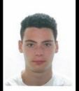

Rémi FLIPO

30 allée de Bourrienne – Rueil-Malmaison, France – Tel : +33681777219 – remi.flipo@wanadoo.fr
EDUCATION
- School Certificate
- Bachelor of Science, Natural Science
- I’m studying for a diploma in Engineering
Science at ECE PARIS, (near the Eiffel Tower):
2 years of preparatory class and 3 years of
engineer specialization (currently in 4th)
EXPERIENCE
- Worker internship at Nomades Shop (2010, Paris, France)
- Worker internship at ProRidr34 (2018, Montpellier, France)
- Passionate scooter rider since 2008
- Scooter teacher at Rueil-Malmaison (FR)
- English & Spanish language good level
- Scooter explorer: I enjoy discovering the
world around scooter (AUS, Singapore, USA, Norway, Finland, Spain,
Switzerland, Dubai, Belgium, Netherlands, Sweden, Luxembourg, Italy, UK, Portugal ...)
HOBBIES
Professional Freestyle Scooter Rider:
- Sponsored by Striker Scooter Parts, Copenhagen, DK
- Sponsored by Gotrott Scooter Shop (GTS), Lyon, FR
- Member/Rider at Urban Rider’s Club, Freestyle Sport Organization
- Community manager for La Cour de Récré, a Parisian rap group